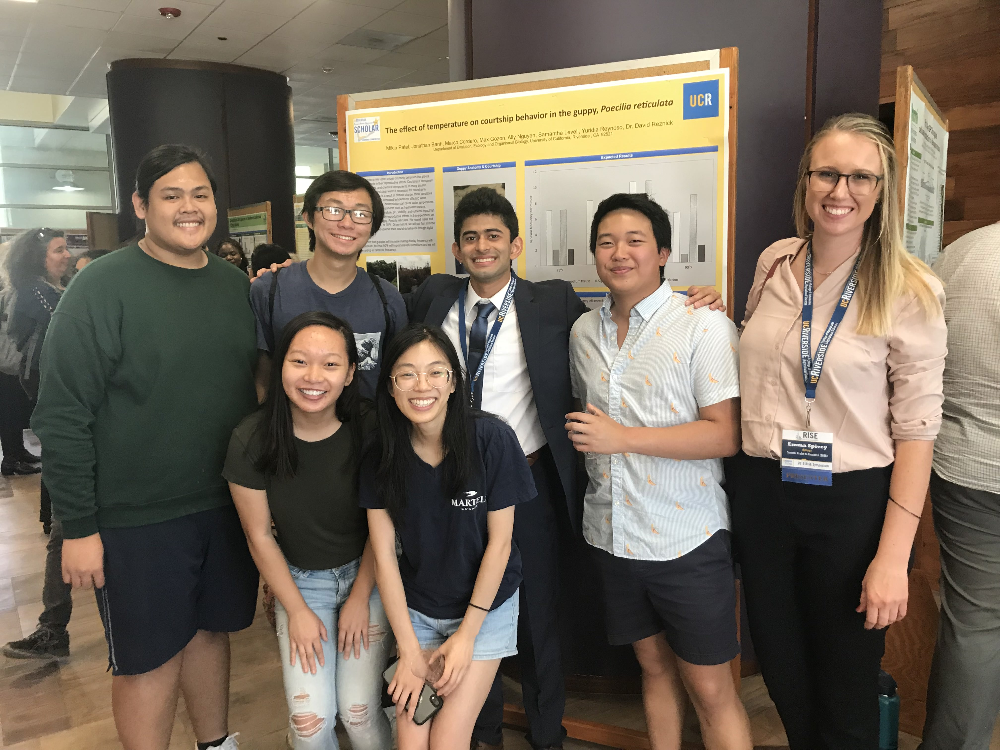
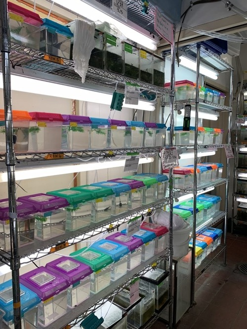
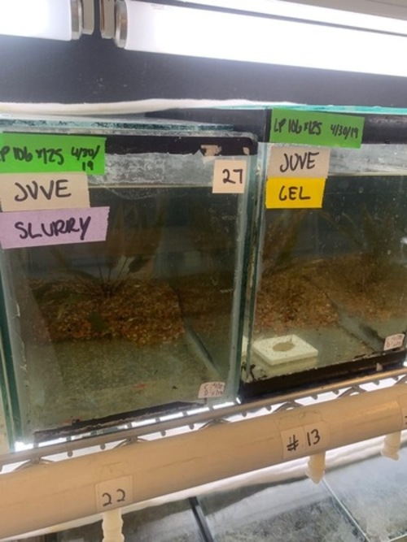
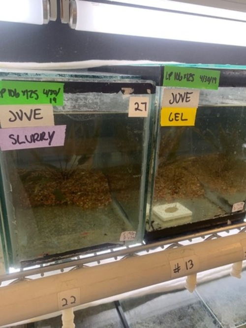
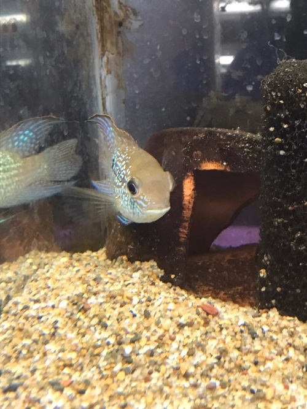
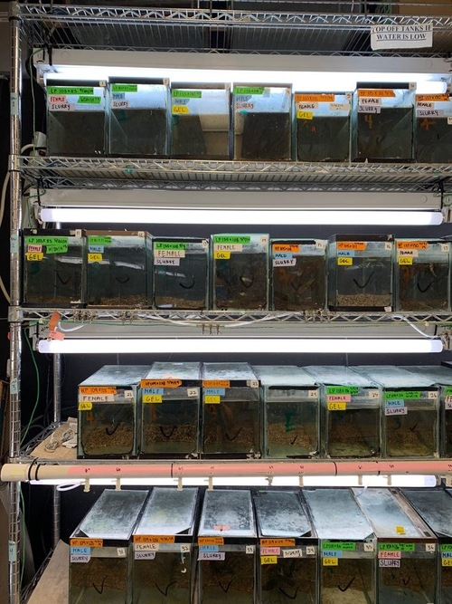
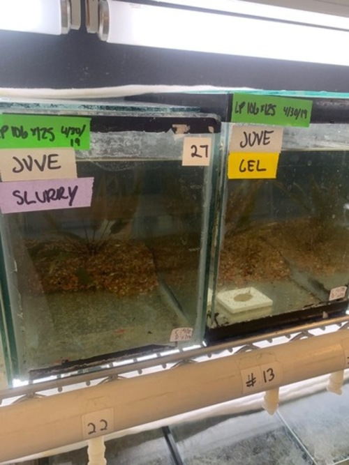
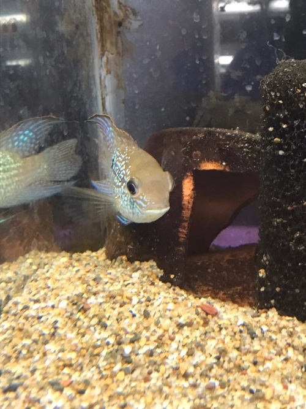
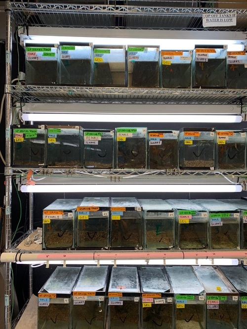

Courtney Chang
I am currently a 4th year college student attending the University of California, Riverside and I will be graduating with a Bachelor of Science in Biology. I currently reside in Sacramento, California and I am looking to go into the research field, more specifically researching cancer causing agents and possible methods to combat against cancer.
I am a very hard working and passionate person. I always strive to make sure that the work I put into anything I do is 100% of my effort whether that something as simple as an assignment for class or something as large as a research project. I also work well with other around me and I am able to communicate and collaborate in order to get a project done. On the other hand, I am diligent, and I can get tasks done by myself on a timely manner. Due to my interest in research I have acquired laboratory skills that include usage of the micropipette, practice of sterile techniques, and laboratory techniques such as PCR.
I was most recently a clinical research assistant with Simple Health Kit where I collected urine samples from women as well as, discussed the importance of STD testing. Simple Health Kit was working towards getting an STD test for women that only required urine, making the test much quicker and more accessible.
Throughout my college career I was a volunteer research assistant at the University of California, Riverside under Dr. David Reznick. I cared for hundreds of fish, which included feeding and overseeing overall health. I also worked closely with Kristin Stewart, a graduate student, to assist in her PhD research. Working in the lab, I was also able to collaborate with several other research assistants and get hands on experience doing animal research. Some of the tasks I did include cleaning tanks, measuring and weighing fish, and routine check-ins for each fish tank.
Although I do not have much work experience, a class that really helped me hone my skills was a course called Dynamic Genome that I took at the University of California, Riverside. In this course, I learned about the basics of genomics and learned different techniques involved with genome such as bacterial transformation and PCR. This course also allowed me to practice my micropipetting skills and we were able to go out into the field to collect our own samples.
Experience
Clinical Research Assisttant
• Collecting urine samples and instructing how to correctly collect
• Talking to women about the importance of STD testing.
Research Assistant
• Caring for hundreds of different fish; includes feeding and overseeing fish health
• Assisting graduate students with research projects and collaborating on experimental design
• Communicating with other research assistants to ensure optimal health of fish
Office Assistant
• Organizing and set up student files with student information and school documents
• Answering phone calls and transferred callers to different departments
• Assisting parents, students, and other personnel with any school business
Education
University of California, Riverside
Portfolio


 



 